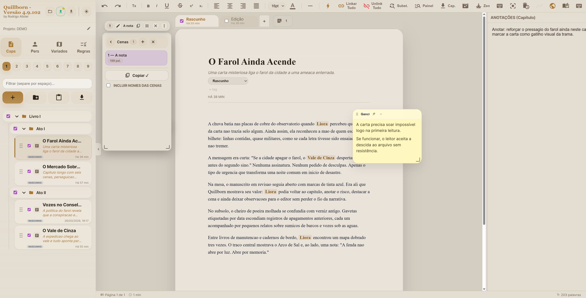

Organização muito fácil de capítulos
Trabalhe por capítulos, subabas e cenas sem perder o fio do projeto. Escreva, rearranje, anote e continue com clareza.
Escrita, organização e revisão em um só fluxo
Quillborn é um estúdio narrativo para escritores e editores. Ele torna fácil organizar capítulos, mover cenas, anotar ideias, revisar estrutura e navegar por personagens, variados e contexto editorial.

Produto
Em vez de espalhar sua história em documentos, notas soltas e ferramentas improvisadas, o Quillborn mantém a obra inteira navegável.
Trabalhe por capítulos, subabas e cenas sem perder o fio do projeto. Escreva, rearranje, anote e continue com clareza.
Aliases, detalhes, motivações, relações e links com a história.
Lugares, organizações, criaturas, raças e itens no mesmo ecossistema.
Anote decisões, dúvidas e observações sem separar o trabalho criativo da revisão.
Encontre trechos, entidades, cenas e conexões sem navegar às cegas.
Fluxo
O Quillborn pode acompanhar a obra desde o rascunho até a revisão de estrutura.
Capítulos, cenas, notas rápidas e organização por projeto.
Personagens, variados, timeline e contexto de mundo deixam de ficar soltos.
Editor e autor podem voltar com contexto para entender estrutura, inconsistências e ritmo.
Organização intuitiva
O Quillborn precisa transmitir facilidade. A ideia não é obrigar o escritor a montar um processo complicado, e sim deixar o projeto narrativo naturalmente navegável.
A escrita gira em torno dos capítulos, com estrutura visível, organização clara e retomada rápida do trabalho.
Cenas ajudam a enxergar construção de capítulo, ritmo, blocos narrativos e revisões com mais clareza.
Lembretes, comentários editoriais, observações de estrutura e detalhes de continuidade ficam perto do texto.
Personagens, lugares, organizações e timeline deixam de ser material solto e passam a fazer parte do processo.
Escritor + Editor
Um editor não precisa ver só o texto final. Com o Quillborn, ele pode enxergar o universo, as anotações, a lógica de capítulos e os elementos que sustentam a narrativa.
Leitura do produto
O valor do Quillborn aparece quando a obra deixa de ser apenas manuscrito linear e vira um projeto narrativo vivo, acessível tanto para quem escreve quanto para quem revisa.
O editor lê o texto, mas nem sempre enxerga motivações, relações, estrutura do mundo ou notas importantes do processo.
O texto continua central, mas agora existe contexto: cenas, personagens, variados, notas, busca e organização editorial.
Mídia do produto
Aqui o site já começa a mostrar o produto de verdade: interface, fluxo de uso e organização prática.
Capítulos, navegação e estrutura aparecendo como o usuário realmente vê.
Demonstração prática do fluxo de escrita, organização e navegação.
O valor aqui está em escrever, anotar, estruturar, revisar e deixar o contexto da obra visível para escritor e editor.
Próximo passo
Um espaço para desenvolver capítulos, cenas, personagens, variados e contexto editorial sem espalhar o projeto em documentos soltos.